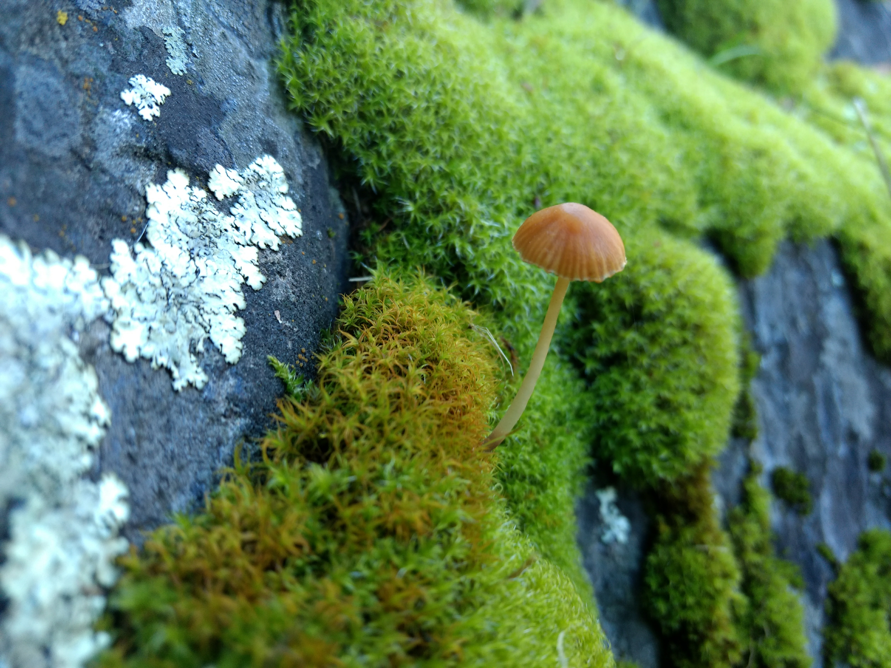

During ancient times when early man used to roam the earth, they made websites out of the most random things. Rocks, sticks, heck even mushrooms.
Trust me, the last thing you want is a website made out of mushrooms.
Here are some terrible, wonderful, down right mushroom-esque facts about websites made of mushrooms:

Take the time to observe the mushroom.
Think about what it means to you.
Do it.
Think.
I know you want to.
I know you mushroom.